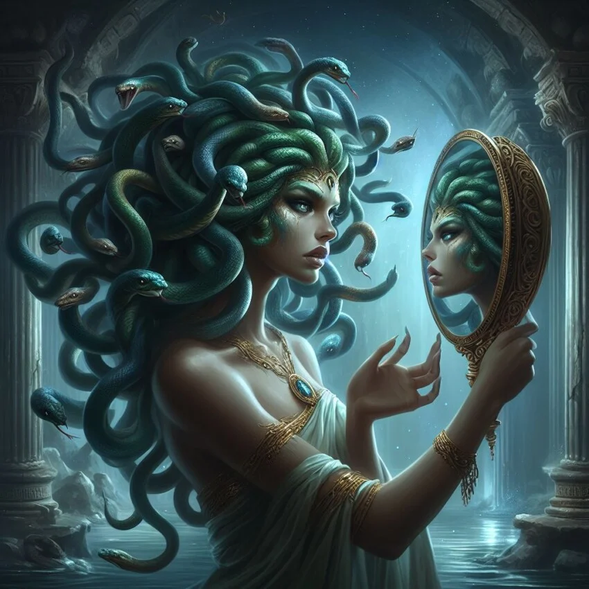

4. El Mito de Medusa (La transformación)
Originalmente, Medusa era una hermosa sacerdotisa del templo de Atenea. Tras un encuentro con Poseidón en el templo, la diosa Atenea se enfureció por la profanación de su espacio sagrado.
- El castigo:Atenea transformó el cabello de Medusa en serpientes venenosas y condenó su mirada: cualquiera que la mirara a los ojos se convertiría instantáneamente en piedra.
- El héroe: Años después, el joven Perseo logró derrotarla usando un escudo de bronce pulido como espejo para ver su reflejo sin mirarla directamente, logrando cortarle la cabeza.
